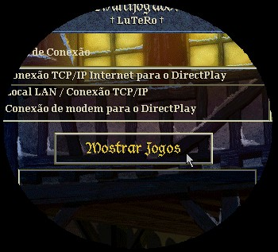

Dúvidas
Tem alguma dúvida?
Clique aqui
para envia-la!
Ou em nosso fórum,
www.age4fun.com/forum
Perguntas Respondidas:
De: Kenji -
kasugai@starmedia.com.br
Dúvida: Parabéns pelo seu site!
Mas gostaria que se você puder me envia-se informações de como
encontrar dicas ou seja código do Age of Empires 1 e o 2 .
Resposta: Pelo que eu sei "Códigos", "Dicas", "Manhas" e outras palavras do gênero, são palavras que ao serem digitadas no meio do Jogo desejado, acontece algo de maneira, mais fácil, impossível ou inacreditável, assim sendo esses "Códigos" do jogo AOE 2, estão á mostra em nossa página no links dá acesso aos codigos.
De: Renato -
jrpcr@ig.com.br
Dúvida: Para
instalar o The Conquerors é necessário o original (full) do AOE
II, certo? Um Crack para enganar a instalação da expansão é
possível ?
Resposta: Não existe e não tem lógica ter um simples Crack para enganar a instalação, pois a expansão não é nada mais do que o acréscimo de novos arquivos dentro do jogo. O principal no entanto é o The Age Of Kings que contém todos os comandos e arquivos não reinstaláveis pelo acréscimo de The Conquerors.
De: Matheus -
matheusaporta@zipmail.com.br
Dúvida: Como construo aquelas torres que soltam pedras.
Só consigo construir as que soltam flechas.
O que tenho que pesquisar ?
Resposta: Não é todas as civilizações que possuem essa tecnologia. Mas no entanto para conseguir as Torres Bombardas ;e necessário construir uma Universidade, e fazer primeiramente você terá que Pesquisar a "Química", depois logo aparecerá o Upgrade das "Torres Bombardas", aparecerá somente na Idade Imperial. As civilizações que possuem essa tecnologia são as seguintes: Bizantinos, Chineses, Coreanos, Espanhóis, Teutônicos e Turcos.
De: Rodrigo -
rac85@bol.com.br
Dúvida: Eu acho ridículo esse limite de 200 unidades em AOE2. Tem
alguma maneira, seja por códigos ou expansão, de aumentar o número
de unidades?
Resposta: Ao meu conhecer, não existe maneira de passar desses 200, as unidades construídas, nem por códigos ou expansão.
De: Leonardo -
agro43@kbonet.com.br
Dúvida: Eu gostaria
de saber como eu faço para jogar on line!?
Resposta: Umas das maneiras mais usadas é você entrar no nosso fórum (www.age4fun.com/forum). Lá você encontrará mais jogadores de AGE, que te darão um número de IP, esse número deve ser colocado dentro da opção do Jogo - Multiplayer - e selecione a primeira opção - Conexão TCP/IP Internet para o DirectPlay e clique no primeiro botão logo abaixo, vai parecer uma janelinha, nela coloque o número do IP, quando aparecer nessa janela o nome do outro jogador clique em entrar.

De: Thiago -
thiagoadorno@hotmail.com
Dúvida: Eu gostaria
de saber se tem um jeito próprio de digitar as "trapaças"
[códigos].
Resposta: Aperte "Enter" e digite os códigos, outro jeito muito fácil também é você clicar no botão de Bate-Papo, como mostra a figura em baixo, esse é o melhor modo de se comunicar com outros jogadores, mas apertar "Enter"e digitar a trapaça sempre será o melhor jeito, pois é rápido e fácil.
De: Jonas -
stosta@terra.com.br
Dúvida: O que é Crack?
Resposta: Crack é um tipo de arquivo colocado no diretório do jogo, que serve para rodar o jogo quando é necessário o CD, mas o usuário não o possui. Alguns Cracks também são usados, para registrar programas tirados da Internet. Aqui em nosso site você encontra os Craks para os dois jogos da série Age of Empires, que serve para entrar no lugar do CD, aí em seu computador.
De: Jonas -
stosta@terra.com.br
Dúvida: O que é The
Conquerors?
Resposta: The Conquerors é a atualização, um tipo de Upgrade do jogo Age of Empires ll, nele contém unidades, civilizações e opções novas. Para saber mais sobre essa Atualização do Age of Empires ll, entre em nossa seção sobre The Conquerors.
As dúvidas respondidas logo acima, são elaboradas de acordo com o conhecimento do autor do site. Mas se o visitante discordar da resposta dada a algumas Dúvidas acima, mande-nos um e-mail que revisaremos a dúvida respondida e talvez até possamos trocar a resposta de acordo com o e-mail enviado.